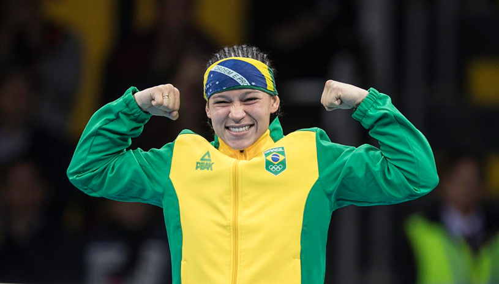
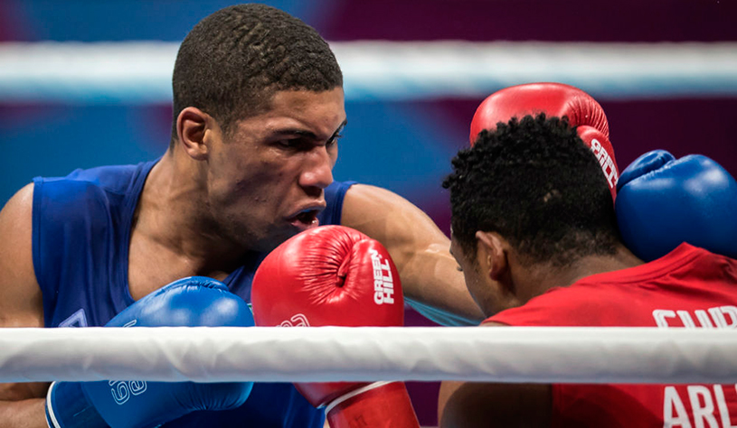
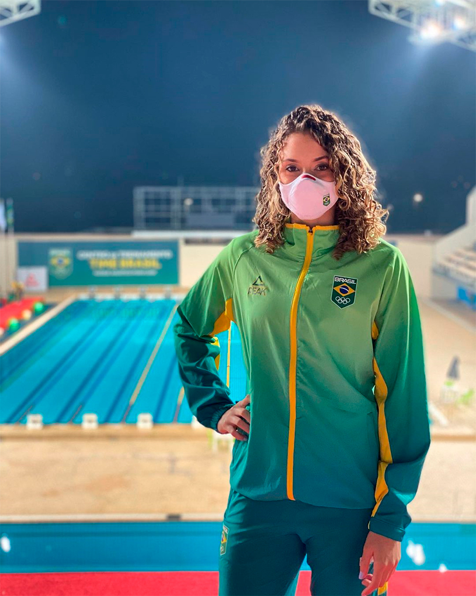
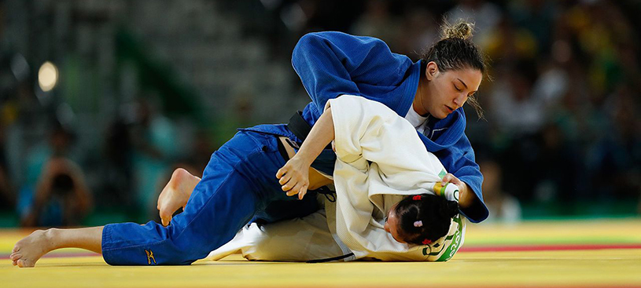
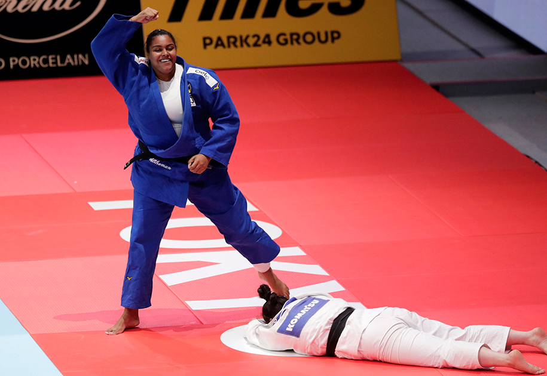
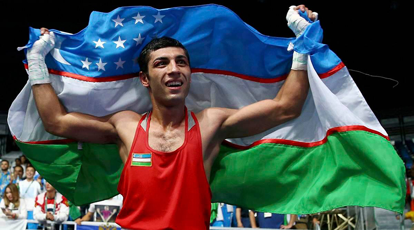
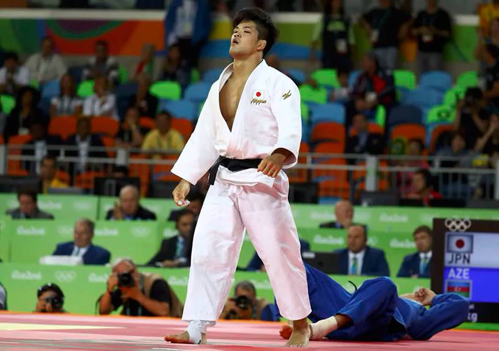
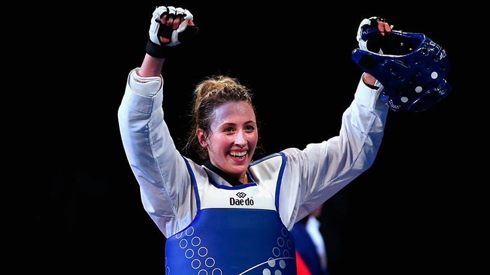
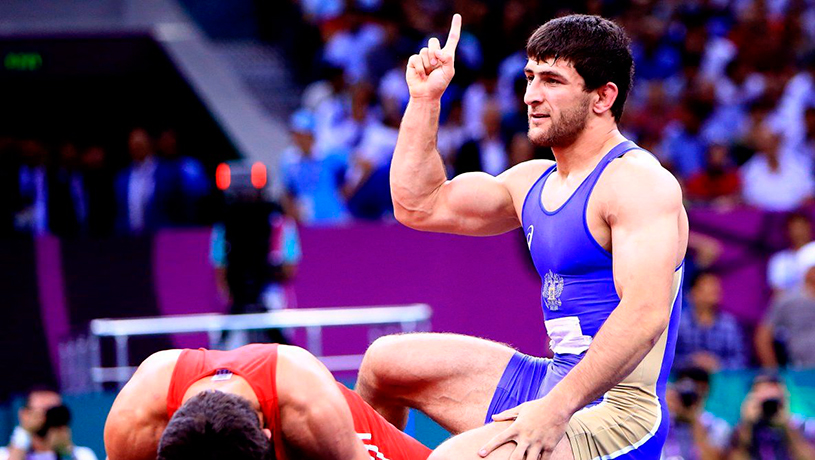
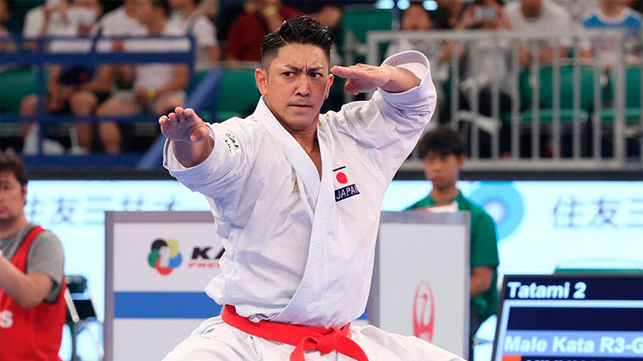

10 Atletas de luta
BEATRIZ FERREIRA – BOXE
Beatriz é uma atleta brasileira que tem grandes chances de chegar ao topo do pódio. Bia é a atual campeã mundial em sua categoria e ganhou todos os torneios que disputou em 2020: um internacional nos Bálcãs e também o título nacional.
HEBERT CONCEIÇÃO – BOXE
Herbert está na Europa treinando forte para trazer uma medalha para o Brasil. O atleta foi bronze no Campeonato Mundial em 2019, e prata nos Jogos Pan-Americanos. Em dezembro de 2020, ainda venceu o Campeonato Brasileiro na categoria até 75kg.
MILENA TITONELI – TAEKWONDO
Chance de medalha para o Brasil no taekwondo, a paulista de 22 anos foi medalha de bronze no welterweight no Campeonato Mundial de Taekwondo de 2019, ouro no Pan de 2019 em Lima, e também medalha de bronze no Campeonato Pan-Americano de Taekwondo de 2018.
MAYRA AGUIAR – JUDÔ
Mayra é outra atleta que pode trazer do Japão uma medalha no Judô. A atleta é campeã pan-americana, mundial e medalhista olímpica. A medalha ganha na Rio 2016, fez dela a primeira atleta brasileira a ganhar duas medalhas olímpicas em um esporte individual. Mayra também conquistou a medalha de bronze em Londres, no ano de 2012.
MARIA SUELEN – JUDÔ
Maria é chance de medalha para o Brasil nos Tatames. A atleta ficou em quinto nos Campeonatos Mundiais de 2018 e 2019, mas atualmente está em terceiro lugar no ranking mundial de sua categoria, o peso pesado. Ela também brilhou nas competições depois da paralisação mundial dos esportes pela pandemia, a atleta foi ouro no Pan-Americano e bronze no Grand Slam de Budapeste.
SHAKHOBIDIN ZOIROV – BOXE
O atleta do Uzbequistão está em busca de seu segundo ouro olímpico, repetindo a performance que teve no Rio de Janeiro. O lutador é favorito ao ouro e atual campeão mundial da categoria.
SHOHEI ONO – JUDÔ
Ono é considerado um dos maiores lutadores do judô de toda história do esporte, ele ganhou três campeonatos mundiais e uma medalha de ouro olímpica no Rio de Janeiro. Além de ter uma das maiores taxas de Ippon da história, Ono está invicto internacionalmente desde 2015.
JADE JONES – TAEKWONDO
Favoritíssima ao ouro, a atleta de taekwondo do País de Gales busca o tricampeonato Olímpico. Ela também é a atual campeã mundial, além de ser a primeira britânica a ganhar uma medalha de ouro olímpica na modalidade com apenas 19 anos.
HASSAN YAZDANI – WRESTLING
O iraniano não perde desde 2018, e foi o campeão nas Olimpíadas do Rio de Janeiro. Hassan também é o atual bicampeão mundial, campeão asiático, campeão islâmico e promessa quase certa de ouro em Tóquio.
KIYUNA RYO – KARATÊ
O Karatê estreia nos Jogos Olímpicos do Japão, país berço do esporte. O estilo Kata já tem seu franco favorito, o atleta da casa Kiyuna Ryo. O carateca tem mostrado uma técnica superior de seus adversários nas últimas competições. Ele é três vezes medalhista de ouro no Campeonato Mundial de Karate e duas vezes medalhista de ouro no evento de kata por equipe masculino, ao lado de Arata Kinjo e Takuya Uemura.